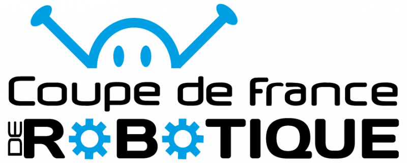
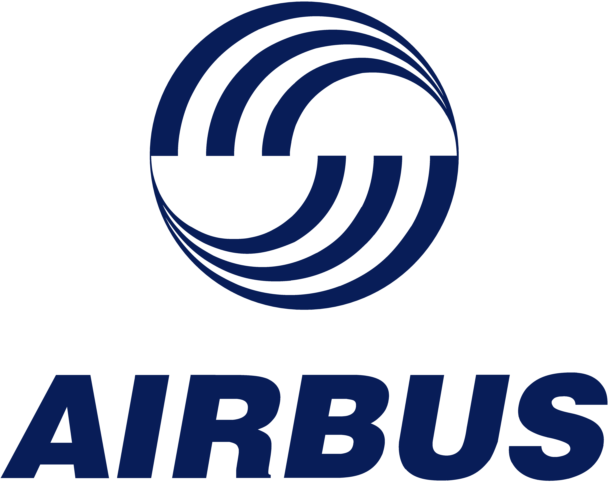

Coupe de France de Robotique
Développement d'un robot autonome
En cours d'écriture.

Développement d'un robot autonome
En cours d'écriture.
Développement d'un site web professionnel
L’objectif de ce projet était de créer un portfolio en ligne
afin de présenter mes compétences, mes expériences et mes
réalisations de manière professionnelle et claire.
Pour le développer, j’ai utilisé HTML, CSS et JavaScript, en
mettant l’accent sur la simplicité, la lisibilité et
l’esthétique. Le site a été conçu pour être responsive, afin
d’offrir une expérience utilisateur optimale sur les
appareils mobiles.
À travers ce projet, je souhaite également montrer ma
capacité à m’adapter et à sortir de ma zone de confort.
Toujours dans une démarche d’amélioration et d’optimisation,
ce site reflète ma volonté d’apprendre, d’évoluer et de
perfectionner mes compétences.

Développement d'Outils métier standards, optimisation de processus & outils de visualisation
À mon arrivée chez Airbus en Supply Chain, j’ai rapidement
constaté un manque de standardisation : chaque Supply
Officer utilisait ses propres fichiers et méthodes de
travail. Cela entraînait un suivi peu fiable, beaucoup
d’actions manuelles et une communication difficile entre les
métiers.
Pour améliorer cette situation, j’ai développé et mis en
place plusieurs solutions :
- création d’un fichier standard commun utilisé par 20
Supply Officers
- automatisation des extractions de données depuis SAP
- revue et amélioration des processus métier
- mise en place d’indicateurs de performance (fiabilité
fournisseur, dérives, etc.)
- mise en place de MoM (Minutes of Meeting) pour structurer
les réunions
Grâce à cet outil et à ces améliorations, les Supply
Officers ont pu réduire d’environ 2 heures par jour les
tâches manuelles, notamment liées aux extractions et à la
consolidation de données. Cela a permis d’obtenir une
meilleure visibilité sur l’approvisionnement, une
anticipation des risques améliorée et une fiabilité accrue
dans la gestion des fournisseurs.